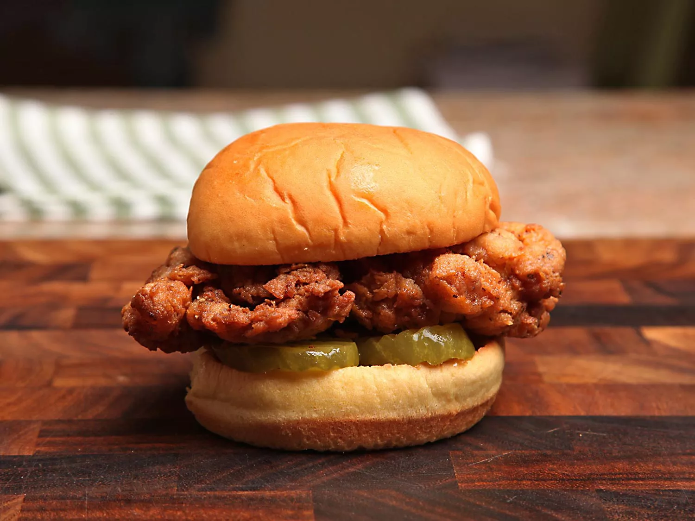

Fried Chicken Sandwich

Description
This delicious fried chicken sandwich only requires 5 ingredients
Ingredients
- 1 jar sliced pickles
- 4 boneless, skinless, chicken thighs
- Kosher salt and freshly ground black pepper
- 1 cup buttermilk
- 1.5 cups self-rising flour
- 1 qt peanut, vegetable, or canola oil
- 4 soft hamburger buns or potato rolls, toasted
Steps
- Pour 3/4 cups pickle juice into a bag, season chicken with salt and pepper, add chicken to the bag with juice and refrigerate for 1-12 hours
- Remove chicken from bag, and discard pickle juice. Pat chicken dry and pour buttermilk into a medium boal. Add flour and 1 Tb pepper to a second bowl. Transfer 3 Tb of buttermilk to bowl
- Transfer chicken to bowl with buttermilk and coat. Remove chicken from buttermilk, allowing excess to drip off. Add chicken to bowl with flour and press down until coated. Repeat for each thigh
- Heat oil in wok, cast iron skillet, or dutch oven to 425F
- Carefully lower chicken pieces to hot oil, maintain temperature between 300-350F. Cook chicken until browned on first side. Flip chicken over and cook for 2-3 minutes. Transfer to paper towl lined plate
- Place chicken on bun and top with pickles. Serve immediately